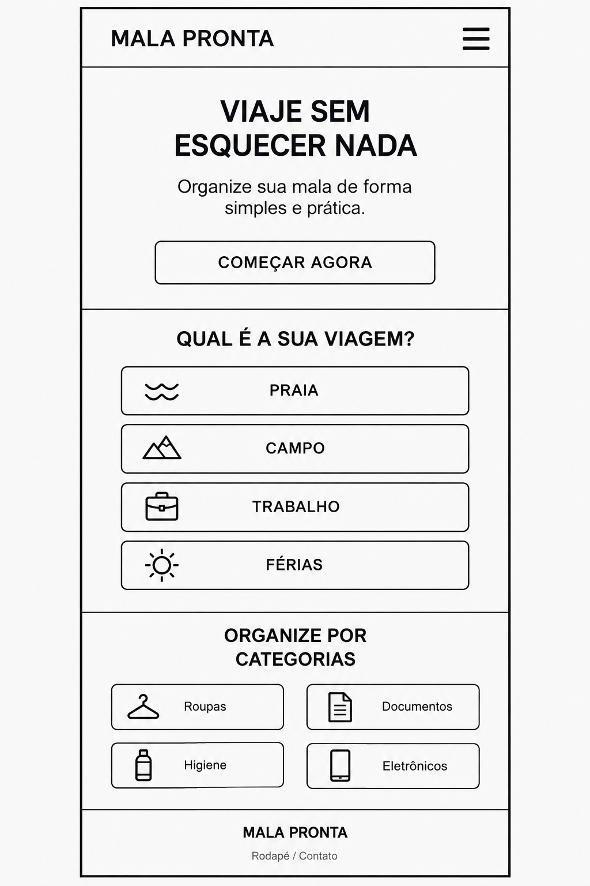
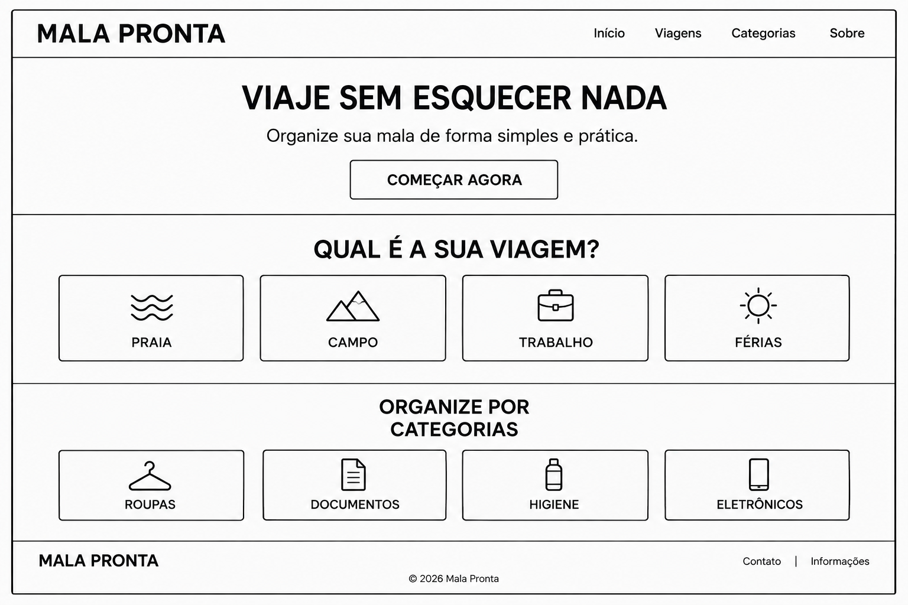

Nome do Site
Mala Pronta
O nome Mala Pronta foi escolhido porque representa de forma simples e direta a proposta do site: ajudar as pessoas a organizarem o que precisam levar em uma viagem. É um nome fácil de lembrar e relacionado à preparação e organização da mala.
Finalidade do Site
O Mala Pronta será um site criado para ajudar pessoas a organizar os itens necessários para diferentes tipos de viagem, como praia, campo, viagem a trabalho ou férias.
O site oferecerá sugestões de itens organizadas por categorias, como roupas, documentos, higiene, eletrônicos e outros itens importantes. A finalidade é tornar a preparação da mala mais simples e prática, ajudando o usuário a reduzir o risco de esquecer algo importante antes da viagem.
Cenários
Os cenários abaixo representam perguntas que os usuários do Mala Pronta podem fazer ao utilizar o site:
- O que preciso levar para uma viagem à praia?
- Quais itens importantes não posso esquecer em uma viagem a trabalho?
Esquema de Cores
As cores escolhidas para o Mala Pronta foram selecionadas para transmitir organização, tranquilidade e uma identidade relacionada a viagens.
- Azul-petróleo (#1F5F6B): será utilizado no cabeçalho, títulos e elementos de destaque.
- Areia clara (#F4EBDD): será utilizada como fundo de seções e áreas de destaque.
- Branco (#FFFFFF): será utilizado como fundo principal e em áreas de leitura.
- Cinza-escuro (#263238): será utilizado nos textos e parágrafos.
Tipografia
A fonte escolhida para o site será a Roboto.
A fonte Roboto será utilizada nos títulos, subtítulos, menus, botões e textos do site. Diferentes pesos da fonte serão utilizados para criar hierarquia visual e facilitar a leitura do conteúdo.
Wireframes
Os wireframes abaixo representam o planejamento da página inicial do Mala Pronta para telas pequenas e grandes.
Wireframe Mobile

